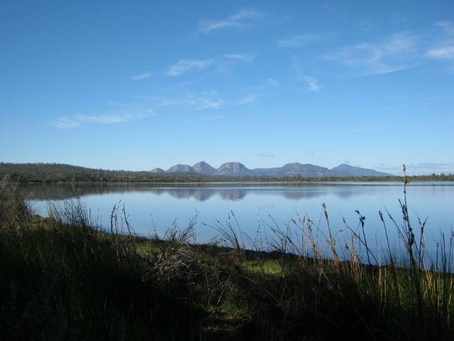

A home away from home
Shucker's Cottages offers a choice of two fully self-contained cottages, each in their own private, peaceful and natural setting, with full kitchen facilities and linen provided.
The cottages are located in a scenic, peaceful, rural setting a leisurely 10 minute drive from Coles Bay village, Freycinet National Park, The Hazards, Wineglass Bay walk and only 8 minutes drive to Friendly Beaches National Park (fishing, surfing, swimming). You will share 50 acres of natural heathland with abundant wildlife, great bird watching opportunities and able to view brilliant sunsets over Pelican Bay watching the "Hazards" change their colour in the distance . If you are a stargazer you will not be disappointed.
Flacks Road is off Coles Bay Road and is adjacent to Pelican Bay (3 minutes walk from both cottages) which is part of the Moulting Lagoon Game Reserve. A world recognised RAMSAR site.

Pelican Bay